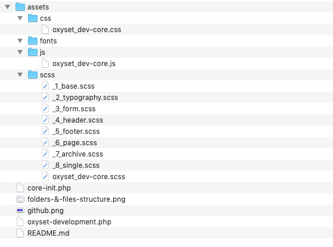

w
w
Custom Scripts & Styles for Oxygen builder
that will help you speed up your workflow.
Description
SCSS Files structure:
custom.scss
- _00_mixin.scss
- _00_variables.scss
- _1_base.scss
- _2_typography.scss
- _3_header.scss
- _4_footer.scss
- _5_page.scss
- _6_archive-post.scss
- _7_archive-cpt.scss
- _8_single.scss
Installation
- Upload the plugin files to the
/wp-content/plugins/OxySet-Development directory, or install the plugin through the WordPress plugins screen directly.
- Activate the plugin through the ‘Plugins’ screen in WordPress
- Upload plugin. Active. Edit SCSS Files. Navigate main SCSS file into CSS folder.
Screenshots
Folders and files structure

w
Changelog
0.0.1
This is where everything starts
🌈 🎉 👉 Visit OxySet.com for more fun stuff. 👈 🎉 🌈